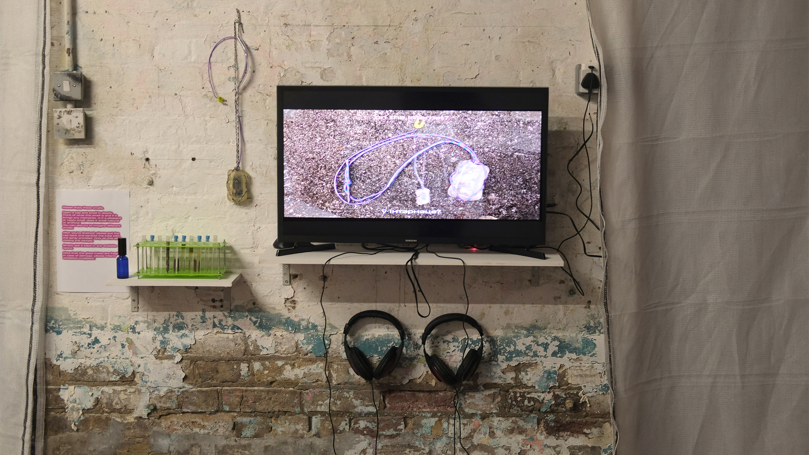
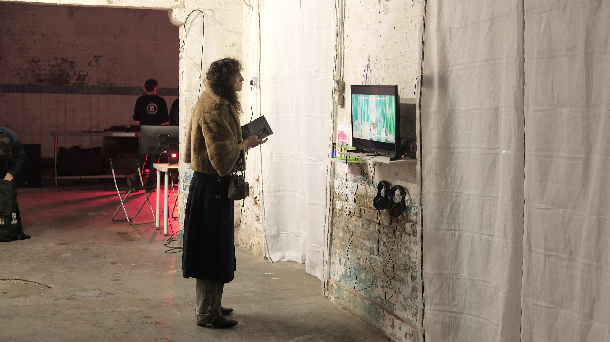
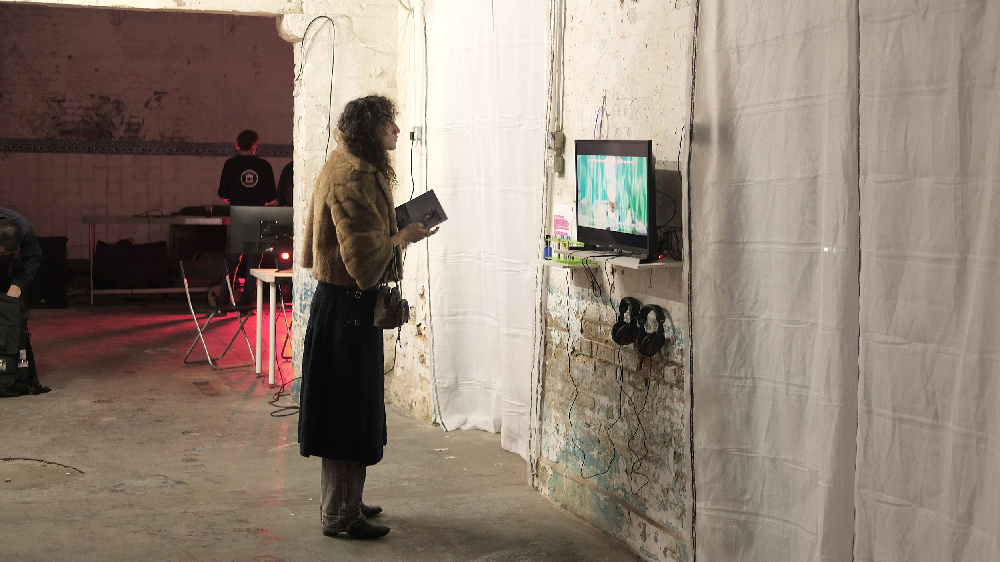
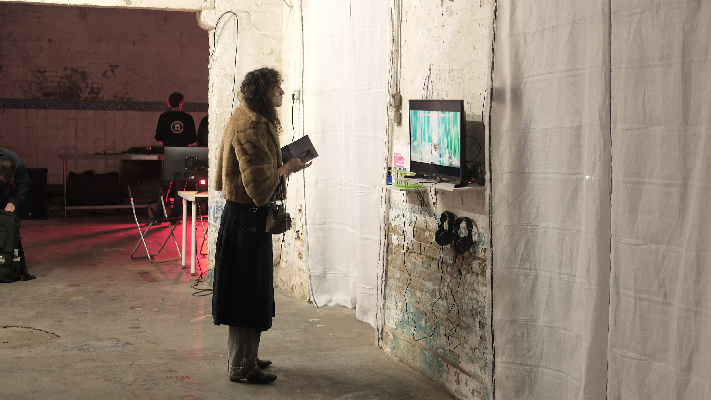
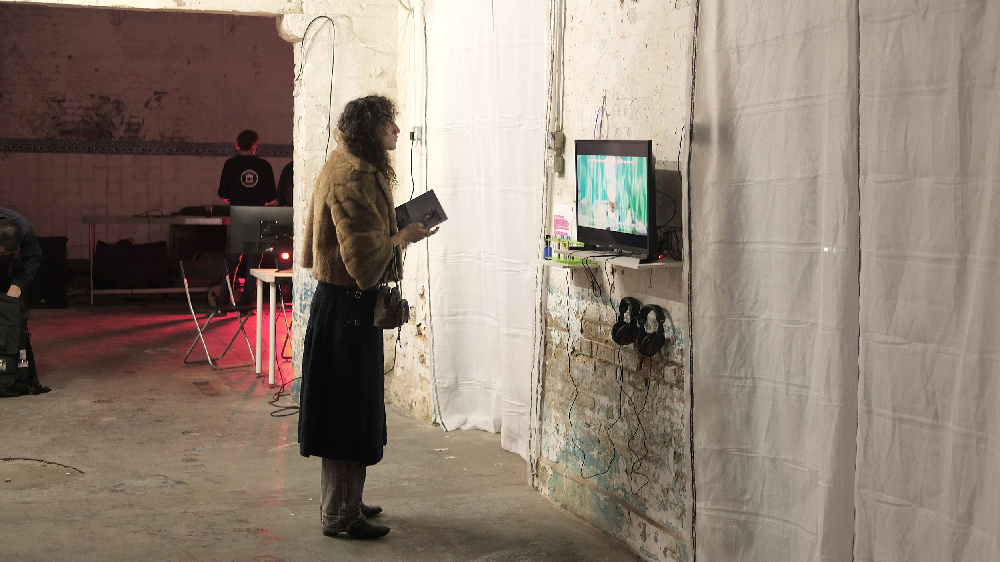

 


is a video essay and installation which is situated around smell. Unlike sound or vision, smell has a greater capacity for abstractions and less connection to the concrete or plastic worlds. Perhaps it is for this reason that it remains on the fringes of digital experience. Why is smell something still situated on the outskirts of art? What would it be like if we could smell as a dog does? What would smell browsing be like on the internet?
Smell Interface is a device that can be used to treat those who have lost smell. By stimulation of the olfactory bulb, people can train their smell back or use digital smell as a sensory enhancement. Smell Interface attempts to provide people with more broad smell experiences.

the production of post truth- 30 sept - 2 oct 2022-- ugly duck
nothern lights film festival- 20 nov - 30 nov 2022-- online